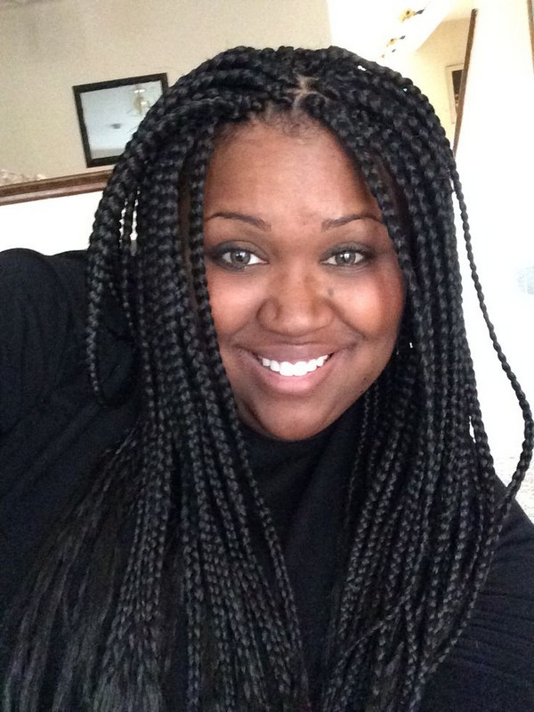
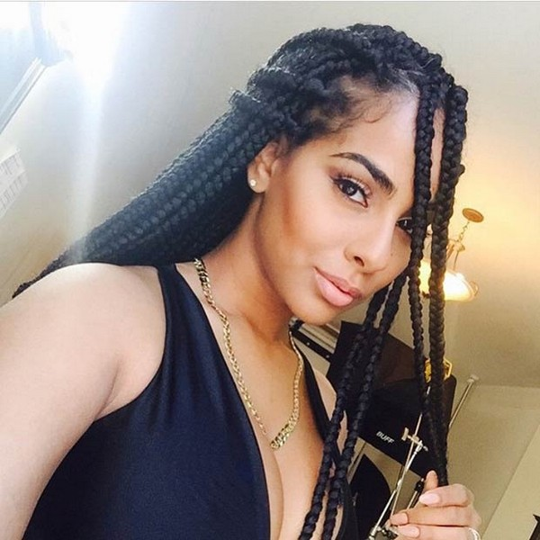
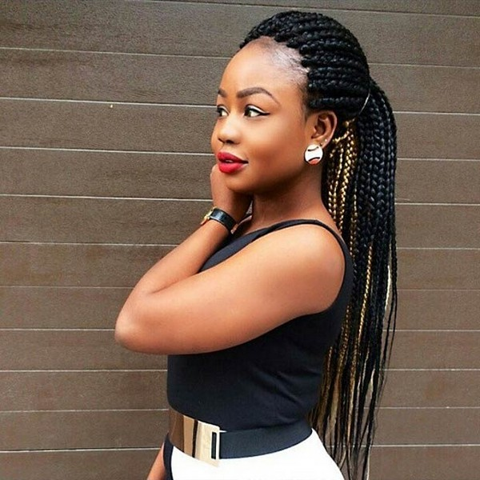
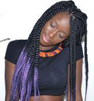

Are you woman? .Here there are many ways to style your hair.
here you can choose your favorite hairstyle,we are ready to do whatever you want to make you more and more beautiful
as you need.
- Best Big Jumbo Hairstyles
- Best Big Box Hairstyles
- Natural Cornrow Hairstyles
- Cute Hair Colors Hairstyles
- Quick and Cute Messy Hairstyles
- Beautiful Mid Length Hairstyles
Best Big Jumbo Hairstyles




Wherever you go, you can always see women rocking jumbo box braids.
It seems that they are always here to stay because of its versatility.
Sometimes it is also known a Poetic Justice braids and box braids.
Want to give your a hair a break? Well, you can easily do it with jumbo box braids.
This is the best protective style that does not only protect your hair but it can also extend it.
After installing the extensions, you can wear any versatile hairstyles right away.
Box braids allow you to protect your natural hair, especially during the winter season.
You can enjoy rocking your box braids up to three months. Depending on the occasion, you can choose to wear an elegant, chic or trendy style.
| |